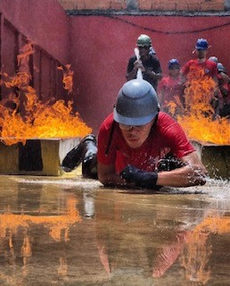

CURSO PROFISSIONALIZANTE
BOMBEIRO CIVIL
UNIDADE CURICICA OU BANGU
Conheça o Curso Profissionalizante em Bombeiro Civil
Seja um profissional em salvar vidas!
O Bombeiro
Civil é o profissional responsável pelos planos de
emergência e gestão de riscos onde atua. O Bombeiro
Civil atua em empresas, shows e eventos e fica
responsável pela gestão dos riscos e situações com
potencial de gerar uma emergência..
Desenvolva na prática
as atividades do dia-a-dia do Bombeiro Civil.
